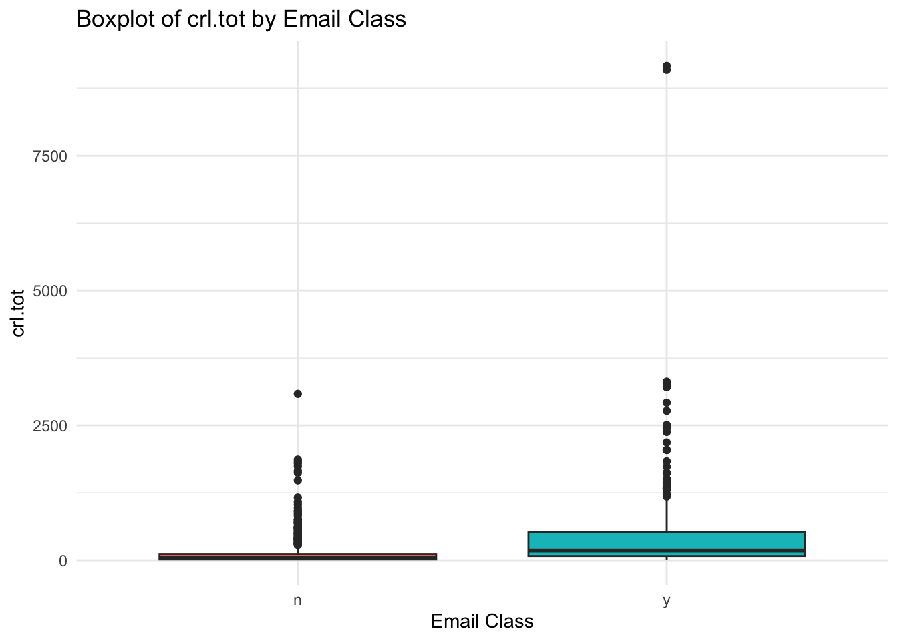
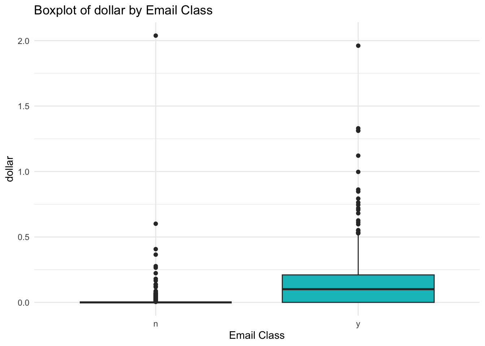
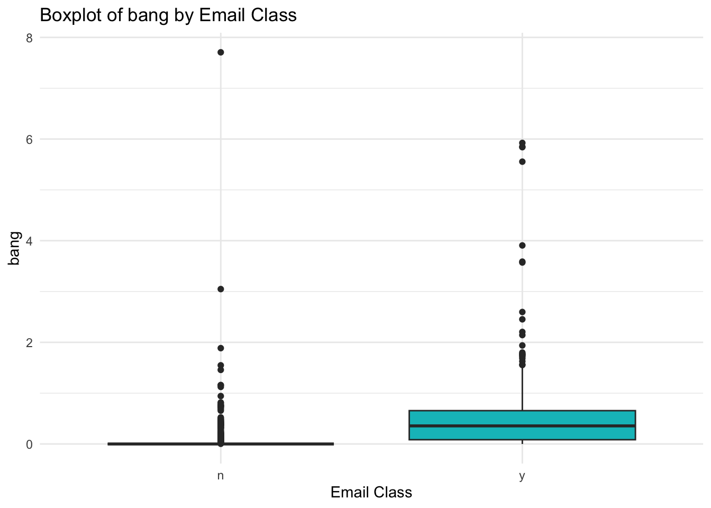
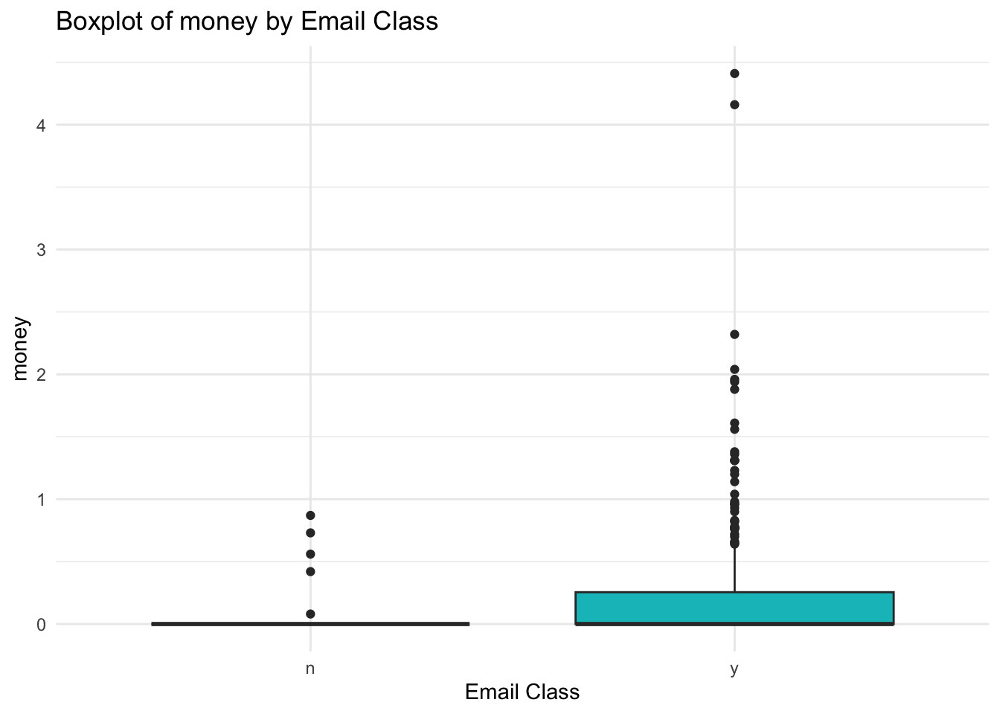
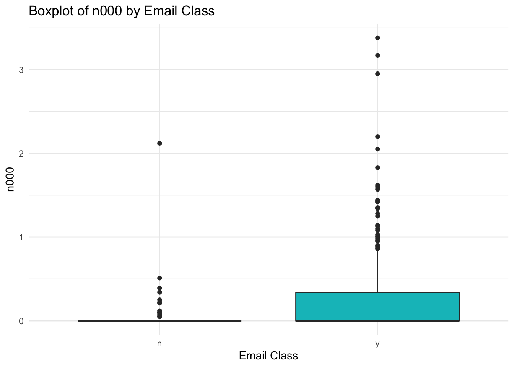
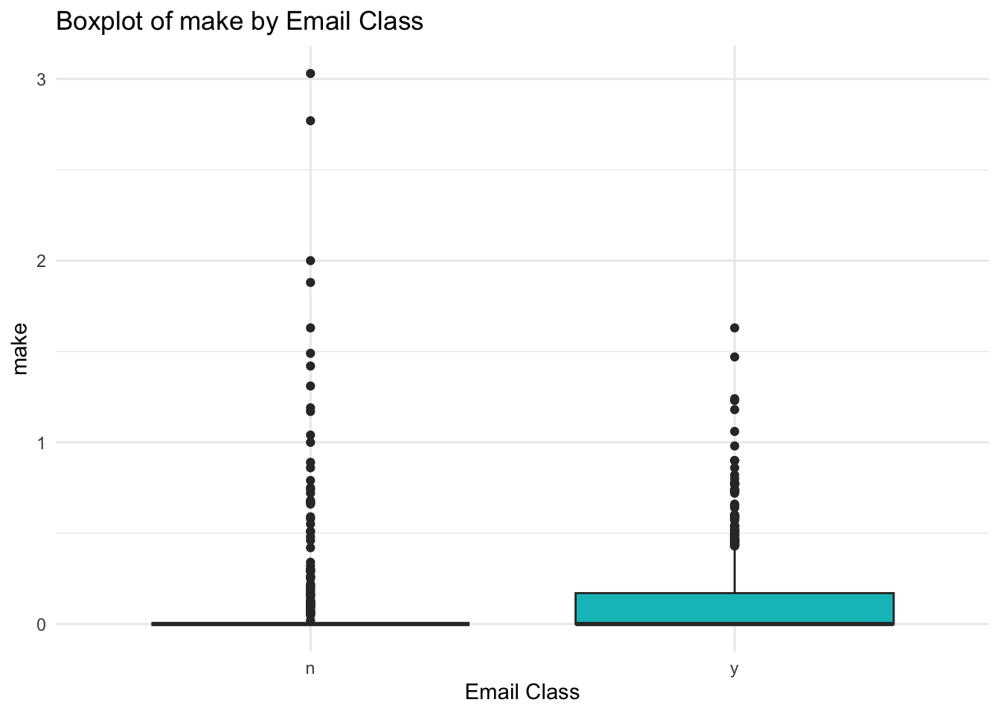
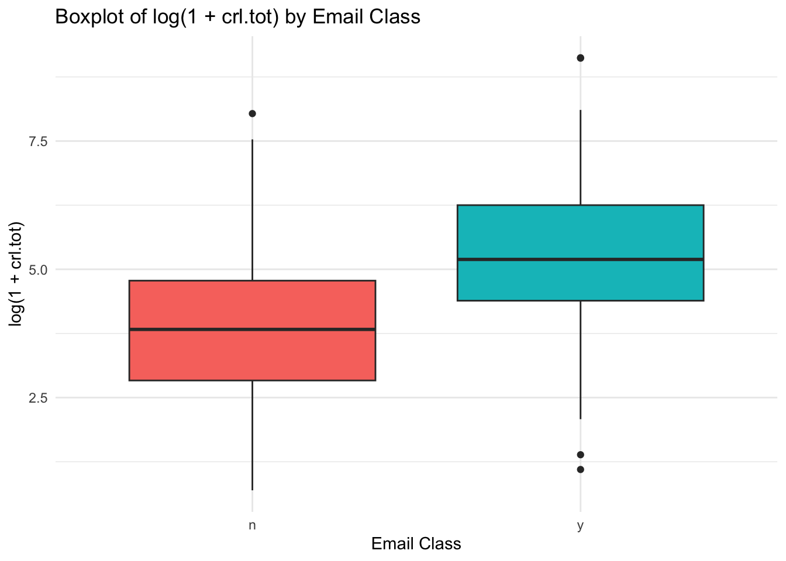
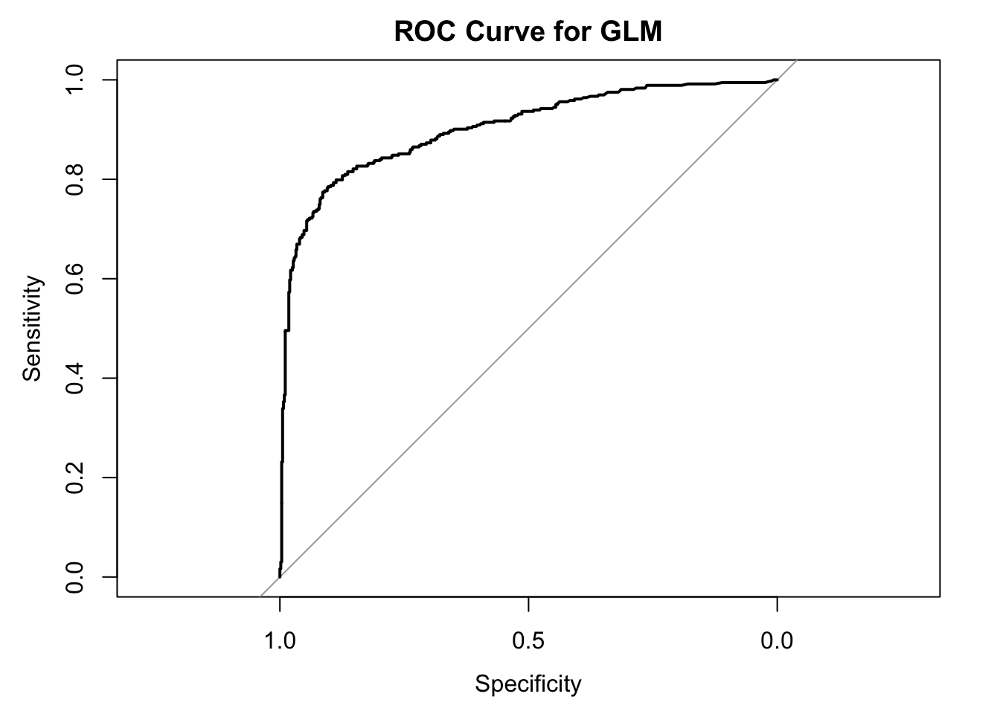

Spam emails are a common problem in email communication and can affect both productivity and security. In this project, we use a spam email dataset to explore which text features are associated with an email being classified as spam. To do this, we fit a binomial logistic regression model and evaluate how well these variables help distinguish spam from non-spam emails.
Before modelling, we prepared the dataset by converting the response variable yesno to a factor and creating a log-transformed version of crl.tot to reduce right skewness. We also inspected the class balance between spam and non-spam emails.
The dataset contains 557 non-spam emails (60.5%) and 363 spam emails (39.5%).
Most predictors are right-skewed, which is expected for word- and symbol-frequency variables. Among them, crl.tot shows particularly strong skewness, so we use its log-transformed version in the GLM.
for (v in num_vars) {print(ggplot(df, aes(x = yesno, y = .data[[v]], fill = yesno)) +geom_boxplot(show.legend =FALSE) +labs(title =paste("Boxplot of", v, "by Email Class"),x ="Email Class",y = v ) +theme_minimal() )}






ggplot(df, aes(x = yesno, y = log_crl_tot, fill = yesno)) +geom_boxplot(show.legend =FALSE) +labs(title ="Boxplot of log(1 + crl.tot) by Email Class",x ="Email Class",y ="log(1 + crl.tot)" ) +theme_minimal()

These box plots illustrate that the above-mentioned variables occur more frequently in spam emails than in normal emails.We did not remove the outliers, because they are likely to be genuine features of spam emails rather than errors in the data.
glimpse(df)
Rows: 920
Columns: 9
$ crl.tot <int> 51, 61, 187, 26, 93, 125, 19, 102, 114, 2453, 200, 54, 45,…
$ dollar <dbl> 0.000, 0.000, 0.000, 0.000, 0.000, 0.000, 0.000, 0.085, 0.…
$ bang <dbl> 0.000, 0.000, 0.000, 0.000, 0.305, 0.000, 0.000, 0.171, 0.…
$ money <dbl> 0.00, 0.00, 0.00, 0.00, 0.00, 0.00, 0.00, 0.58, 0.00, 0.63…
$ n000 <dbl> 0.00, 0.00, 0.00, 0.00, 0.00, 0.00, 0.00, 0.00, 0.00, 0.59…
$ make <dbl> 0.00, 0.00, 0.00, 0.00, 0.00, 0.00, 0.00, 0.00, 0.00, 0.59…
$ yesno <fct> n, n, n, n, y, n, n, y, y, y, y, n, n, n, n, y, n, y, n, n…
$ spam_num <dbl> 0, 0, 0, 0, 1, 0, 0, 1, 1, 1, 1, 0, 0, 0, 0, 1, 0, 1, 0, 0…
$ log_crl_tot <dbl> 3.951244, 4.127134, 5.236442, 3.295837, 4.543295, 4.836282…
summary(df)
crl.tot dollar bang money
Min. : 1.0 Min. :0.00000 Min. :0.0000 Min. :0.00000
1st Qu.: 29.0 1st Qu.:0.00000 1st Qu.:0.0000 1st Qu.:0.00000
Median : 83.5 Median :0.00000 Median :0.0000 Median :0.00000
Mean : 268.6 Mean :0.06868 Mean :0.2636 Mean :0.08516
3rd Qu.: 244.0 3rd Qu.:0.05000 3rd Qu.:0.3550 3rd Qu.:0.00000
Max. :9163.0 Max. :2.03800 Max. :7.7070 Max. :4.41000
n000 make yesno spam_num log_crl_tot
Min. :0.00000 Min. :0.00000 n:557 Min. :0.0000 Min. :0.6931
1st Qu.:0.00000 1st Qu.:0.00000 y:363 1st Qu.:0.0000 1st Qu.:3.4012
Median :0.00000 Median :0.00000 Median :0.0000 Median :4.4367
Mean :0.09896 Mean :0.09775 Mean :0.3946 Mean :4.4608
3rd Qu.:0.00000 3rd Qu.:0.00000 3rd Qu.:1.0000 3rd Qu.:5.5013
Max. :3.38000 Max. :3.03000 Max. :1.0000 Max. :9.1230
Modelling
We fitted a generalized linear model (GLM) with a binomial family and logit link, that is, a logistic regression model. This model is appropriate because the response variable yesno is binary, indicating whether an email is spam or not spam. The model estimates how the predictor variables affect the probability that an email is classified as spam.
The GLM results show that log_crl_tot, dollar, bang, money, and n000 are all significant positive predictors of spam, meaning that higher values of these variables are associated with a higher probability that an email is classified as spam. In contrast, make is not statistically significant, suggesting that it does not provide additional predictive value once the other variables are included in the model. Overall, the model indicates that features such as capital-letter runs, dollar signs, exclamation marks, the word “money”, and the string “000” are important indicators of spam.
Confusion Matrix and Statistics
Reference
Prediction n y
n 527 107
y 30 256
Accuracy : 0.8511
95% CI : (0.8264, 0.8735)
No Information Rate : 0.6054
P-Value [Acc > NIR] : < 2.2e-16
Kappa : 0.6764
Mcnemar's Test P-Value : 8.408e-11
Sensitivity : 0.7052
Specificity : 0.9461
Pos Pred Value : 0.8951
Neg Pred Value : 0.8312
Prevalence : 0.3946
Detection Rate : 0.2783
Detection Prevalence : 0.3109
Balanced Accuracy : 0.8257
'Positive' Class : y
The GLM achieved an accuracy of 85.11%, which is substantially higher than the no-information rate of 60.54%. The model has high specificity (94.61%), meaning it is very good at identifying non-spam emails, and moderate-to-strong sensitivity (70.52%), meaning it also detects most spam emails. Overall, the model performs well, although some spam emails are still missed.
roc_obj <-roc(response = df$yesno, predictor = df$pred_prob, levels =c("n", "y"))plot(roc_obj, main ="ROC Curve for GLM")

auc(roc_obj)
Area under the curve: 0.9022
The ROC curve lies well above the diagonal reference line, indicating that the GLM has good discriminatory ability in distinguishing spam from non-spam emails. This suggests that the model performs substantially better than random classification and provides strong overall predictive performance.
Reduced Model
Since make was not statistically significant in the full model, we fitted a reduced model excluding make and compared the two models. If the reduced model shows similar or better fit, it would be preferred for parsimony.
mod2 <-glm( yesno ~ log_crl_tot + dollar + bang + money + n000,data = df,family = binomial)summary(mod2)
Call:
glm(formula = yesno ~ log_crl_tot + dollar + bang + money + n000,
family = binomial, data = df)
Coefficients:
Estimate Std. Error z value Pr(>|z|)
(Intercept) -3.83234 0.36223 -10.580 < 2e-16 ***
log_crl_tot 0.48538 0.07373 6.583 4.60e-11 ***
dollar 5.50528 1.20774 4.558 5.16e-06 ***
bang 2.28686 0.28932 7.904 2.70e-15 ***
money 4.97812 1.10756 4.495 6.97e-06 ***
n000 2.68149 0.75302 3.561 0.000369 ***
---
Signif. codes: 0 '***' 0.001 '**' 0.01 '*' 0.05 '.' 0.1 ' ' 1
(Dispersion parameter for binomial family taken to be 1)
Null deviance: 1234.17 on 919 degrees of freedom
Residual deviance: 713.99 on 914 degrees of freedom
AIC: 725.99
Number of Fisher Scoring iterations: 7
AIC(mod1, mod2)
df AIC
mod1 7 727.2641
mod2 6 725.9930
anova(mod1, mod2, test ="Chisq")
Analysis of Deviance Table
Model 1: yesno ~ log_crl_tot + dollar + bang + money + n000 + make
Model 2: yesno ~ log_crl_tot + dollar + bang + money + n000
Resid. Df Resid. Dev Df Deviance Pr(>Chi)
1 913 713.26
2 914 713.99 -1 -0.72889 0.3932
Confusion Matrix and Statistics
Reference
Prediction n y
n 527 108
y 30 255
Accuracy : 0.85
95% CI : (0.8253, 0.8725)
No Information Rate : 0.6054
P-Value [Acc > NIR] : < 2.2e-16
Kappa : 0.6738
Mcnemar's Test P-Value : 5.576e-11
Sensitivity : 0.7025
Specificity : 0.9461
Pos Pred Value : 0.8947
Neg Pred Value : 0.8299
Prevalence : 0.3946
Detection Rate : 0.2772
Detection Prevalence : 0.3098
Balanced Accuracy : 0.8243
'Positive' Class : y
The reduced model has a slightly lower AIC than the full model, suggesting a marginally better fit with fewer predictors. Its classification performance remains almost unchanged, with an accuracy of 85.0%, indicating that removing make does not meaningfully reduce predictive performance. Therefore, the reduced model may be preferred for parsimony.
Conclusion
In this project, we first prepared the data by converting yesno into a factor and creating a log-transformed version of crl.tot. From the exploratory data analysis, we found that most variables were right-skewed, especially crl.tot, so using log(1 + crl.tot) was appropriate. We then fitted a binomial logistic regression model and found that log_crl_tot, dollar, bang, money, and n000 were important positive predictors of spam, while make was not significant. After removing make, the reduced model still performed well, with an accuracy of about 85%. Overall, this suggests that emails containing more capital-letter runs, dollar signs, exclamation marks, the word “money”, and the string “000” are more likely to be classified as spam.